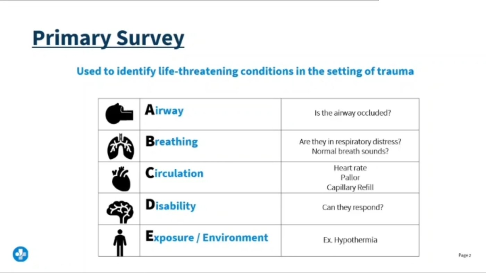

Exam 5 · Week 12 · Standalone study page
M12 · Disaster, Mass Casualty & Emergency Nursing
This page keeps all of the original course information, while reducing the decision to one module: triage, emergency action and disaster safety.
▸M12Disaster, Mass Casualty & Emergency NursingWeek 12
💡 The one idea
Disaster triage inverts everyday nursing. Normally the sickest patient goes first. In a mass casualty you do the greatest good for the greatest number — so the most critically injured may be passed over.
| Tag | Means | Examples |
|---|---|---|
| 🔴 RED | Immediate — life-threatening but survivable with quick care | Airway obstruction, tension pneumothorax, severe controllable bleeding |
| 🟡 YELLOW | Delayed — serious, can wait 30–60 min | Open fractures, stable abdominal injury |
| 🟢 GREEN | Minimal — “walking wounded” | Minor cuts, sprains; can often help others |
| ⚫ BLACK | Expectant — dead, or injuries incompatible with survival | Massive head trauma, full-thickness burns >90% |
🚨 The counter-intuitive rule
A patient in cardiac arrest during a mass casualty event is tagged black, not red. Resuscitating one person consumes the staff and time that could save several.
This is the opposite of everyday practice, and that is exactly why it is tested.
🛡️ Who gets discharged to make beds
When a disaster is announced, the patients discharged first are the most stable — typically those already awaiting discharge, day-surgery patients, and stable chronic patients.
✅ Decontamination order
You are no use to anyone as a second casualty. Scene safety and your own PPE come before patient contact - every time.

⭐ High-yield — what the exam actually asks
Show 5 moreHide these 5
- Triage tags — RED: life-threatening but survivable with quick intervention. YELLOW: delayed (open or closed fractures, deep lacerations). GREEN: walking wounded. BLACK: expectant or deceased (agonal breathing, exposed brain matter, uncontrolled arterial bleed with major loss). An open fracture is yellow. A controllable arterial bleed is red; an uncontrolled one in an unresponsive client is black.
- Three-tier system: emergent, urgent (treat within
2 hr), non-urgent. ESI runs Level 1 (most urgent) to Level 5. - Sequence is triage → primary survey → secondary survey. Never leave the primary survey until she is stable.
- ABCDE: Airway with C-spine protection, Breathing, Circulation (control hemorrhage now), Disability (GCS/pupils), Exposure (undress fully, then prevent hypothermia). Brain death occurs within
3–5 minwithout an airway. - Secondary survey is head-to-toe after stabilization and includes AMPLE: Allergies, Medications, Past history, Last meal, Events.
Show 5 moreHide these 5
- Tension pneumothorax is diagnosed by assessment — deviated trachea, absent breath sounds, unequal chest rise. Needle decompression first, then chest tube. Do not wait for imaging.
- Chest tubes: tidaling is expected; water-seal bubbling means an air leak; never clamp during transport; keep the system below chest level. Disconnected → sterile water seal. Pulled out → occlusive dressing taped on three sides.
- Intra-abdominal injury: rigid distended abdomen, guarding, Kehr's sign (referred shoulder pain = splenic injury). Crush injury: myoglobin causes AKI — aggressive fluids once the force is released. Tetanus prophylaxis if the last dose was 5–10 years ago.
- Heat stroke: core
>104°Fwith altered mental status → rapid cooling plus IV fluids. Hypothermia: core<95°F→ handle gently, a cold heart is irritable. Frostbite: warm (not hot) water immersion, never rub, never rewarm if refreezing is possible. - Activated charcoal works for medications within 1–2 hours. Not for corrosives or hydrocarbons, and not without a protected airway.
Show 5 moreHide these 5
- Antidotes: naloxone for opioids (watch for re-sedation), N-acetylcysteine for acetaminophen, flumazenil for benzos (can precipitate seizures), vitamin K for warfarin, protamine sulfate for heparin. Alcohol intoxication: airway and side-lying, and thiamine before glucose in chronic drinkers.
- Snakebite: keep her still, limb at or below heart level, remove jewelry. No ice, tourniquet, cutting, heparin or steroids in the first 6–8 hours. Antivenom within
4–12 hr. Assess edemaq15–30 min. - Sexual assault: safety and consent at every step, SANE examiner, preserve evidence but never delay care. Human trafficking red flag: a companion who will not leave the room or answers for her — interview alone with a professional interpreter.
- Psychiatric emergency: de-escalate first; restraints are a last resort requiring an order and frequent reassessment. The ED is the #1 setting for staff abuse — document everything.
- Agencies: FEMA coordinates federal response; CDC handles surveillance and the Strategic National Stockpile; OSHA sets PPE standards; The Joint Commission requires an emergency operations plan; HICS is the hospital chain of command. Follow your assigned task only.
Show 2 moreHide these 2
- Anthrax is bacterial and NOT person-to-person — no isolation. Cutaneous, inhalation and ingestion routes; ciprofloxacin or penicillin. Smallpox (airborne) and plague (droplet) ARE transmissible. Nerve agents: decontaminate with soap and water or saline for
≥20 min— blot, do not wipe. Inhaled toxic chemicals cause pulmonary edema → intubate, not a chest tube. - Decontamination: remove all clothing and jewelry first (that alone removes most contamination), then copious head-to-toe irrigation, in a dedicated decon zone before entering the treatment area. Contain the runoff.
🎧 From the LSC exam-prep recording
What the faculty actually said in the review session for this week — their numbers, their worked calculations, their priority rulings. On an exam, this beats the textbook.
Show 3 moreHide these 3
- Anthrax: IV ciprofloxacin. With hypotension and distress the first action is large-bore access and rapid isotonic fluids.
- Carbon monoxide: the SpO2 is worthless. It reads 98% on room air while she is poisoned, because the probe cannot tell oxyhemoglobin from carboxyhemoglobin. You need a blood carboxyhemoglobin level. Treatment is 100% oxygen by non-rebreather. Symptoms are mostly neurologic — headache and dizziness first.
- Nerve agent / cholinergic crisis — copious secretions, twitching, respiratory distress: atropine + pralidoxime + benzodiazepines for seizure risk, plus soap-and-water decontamination. Avoid plastic airway equipment, because plastic absorbs the agent.
Show 5 moreHide these 5
- Frostbite is graded like burns. Clear blisters = second degree → rewarm in a water bath around
105–106°F, opioids for pain. Tetanus boosters every 10 years — but every 5 years if there is an open wound. - Disaster triage vs everyday ESI: in ESI, level 1 (the sickest) goes first. In mass casualty that same person may be black-tagged. You are hunting the red tag, not the black one.
- Their field cutoffs: RR under 10 or over 30 is abnormal (10–29 acceptable) · cap refill over 2 seconds or pulse over 120 = red. No blood pressures — there is no time.
- Their worked tag assignments: unconscious, RR 8, no pulse → black · walking wounded → green · RR 30 + cap refill >2 s + cannot follow commands → red · open femur fracture with stable vitals → yellow · chest burns with hoarseness and stridor → red · massive head trauma with agonal respirations → black · superficial forearm burn, alert → green.
- Ingestion matrix: corrosive → endoscopy, no charcoal and no lavage · non-corrosive within 45 min → activated charcoal (the stomach empties in about 2 hours) · 3 hours out with stable vitals → supportive care only · known antidote → give the antidote. We never induce vomiting.
Show 3 moreHide these 3
- Trauma with BP 60/palp and HR 144: two large-bore 18-gauge IVs and fluids. Not CT, not an NG tube.
- Suicide attempt: constant observation, remove hazards, talk to her without family present, ask about suicide directly — the old “don’t say the word” belief is out — and crisis intervention now. They described a nurse who stayed with a client for ten hours outside the room: constant observation means constant. Individual therapy is not appropriate until the crisis is stabilized.
- Calc: oxacillin 375 mg from 250 mg/1.5 mL =
2.3 mL. Their sanity check: "I'm giving more than I have, so my volume must exceed 1.5 mL."
Show 4 moreHide these 4
- Glasgow Coma Scale runs 3 to 15 — it never starts at zero. 15 is alert and oriented. 8 or less means she is not protecting her airway: intubate. “GCS of 8, intubate” is the phrase to hold on to.
- The direction matters more than the number. A GCS climbing from 10 to 14 is what you want. A falling GCS is the emergency, whatever the starting value.
- Evisceration: cover the exposed bowel with sterile saline-moistened gauze, position supine with the knees flexed to take tension off the abdomen, nothing by mouth. Never dry gauze, never open to air, never push the bowel back in. If the vital signs are unstable, resuscitation still outranks the dressing.
- Snake bite, what is contraindicated: a tourniquet, ice, cutting and sucking the wound, and alcohol. Keep the limb below heart level, immobilize it, remove rings and watches early, mark the leading edge of the swelling with the time, and give antivenom within 4 to 12 hours if indicated.
Show 5 moreHide these 5
- Triage rule: unstable vital signs beat everything else on the list. If any option mentions resuscitation, that is the priority.
- Put yourself in the room. Their repeated advice: picture the scene before reading the options. You would not walk to the cupboard for supplies before covering an open abdomen, and you would not call the provider before doing what you can.
- Cutaneous anthrax — they flagged the image as one worth recognizing, because it changed a real patient’s management on their unit.
- Radiation, chemical and biological exposure: decontaminate before the patient enters the department, and protect the staff first — you are no use to anyone contaminated.
- In any mass casualty question, the resource is the constraint. The answer is what saves the most people with what is actually available, not what is best for one person.
⚠️ Exam traps
- Disaster triage optimizes for the greatest good for the greatest number — which can mean not treating the sickest client.
- Yellow vs green hinges on wound depth and mobility, not on which injury sounds worse.
- Anthrax needs no isolation; smallpox and plague do.
🧠 Mind maps 1
One per disorder, built from the structure of your ATI chapter.
🎯 Who gets it
- Trauma victims risk hypothermia from exposure, cold oxygen, and cold IV fluids.
- Children under
5 yearsold face the highest accidental poisoning risk. - Mid-to-late childhood kids face the highest snakebite risk.
- Vulnerable clients face higher risk of trafficking exploitation.
👀 What you see
- Hypothermia: shivering, impaired judgment, dysarthria, and drowsiness are common signs.
- Heatstroke: temperature above
40° C (104° F)with altered mental status. - Heatstroke may show abnormal blood potassium or sodium levels.
- Frostbite severity may not be clear until up to
24 hrafter injury.
🩺 What you do
- Airway comes first; brain injury or death can occur within
3 to 5 minwithout a patent airway. - Use head-tilt/chin-lift only when no cervical spine injury is suspected.
- Use a modified jaw thrust if trauma is suspected, to protect the spine.
- Apply direct pressure for bleeding first; use a tourniquet proximally if that fails.
💬 What you teach
- Wear lightweight, loose clothing and avoid excess sun to prevent hyperthermia.
- Stay indoors with fans or AC during periods of high heat.
- Limit alcohol and caffeine intake in hot weather.
Read left to right: who gets it → what you see → what confirms it → what you do → what goes wrong. Cover a column and rebuild it out loud.
🖼️ Triage at a glance 1
There is no separate disaster page on this site yet, so rather than link you to nothing, here is the chart itself.
| Tag | Means | Who |
|---|---|---|
| RED Immediate | Life-threatening but survivable with rapid intervention | Airway obstruction, tension pneumothorax, severe hemorrhage, shock that responds |
| YELLOW Delayed | Serious, but can wait hours | Stable abdominal injury, large fractures, burns without airway involvement |
| GREEN Minimal | The walking wounded | Minor lacerations, sprains, small burns — and they can help |
| BLACK Expectant | Dead, or injuries incompatible with survival given available resources | Massive head injury, full-thickness burns over most of the body, no respirations after airway repositioning |
🚨 This is the part that feels wrong and is right
In everyday nursing the sickest client is seen first. In a mass casualty that reverses: the goal is the greatest good for the greatest number, so the client who would consume enormous resources with little chance of survival is tagged expectant and the salvageable are treated first.
The walking wounded are moved out first — not because they matter least, but because clearing them lets you find everyone else.
📋 Active Learning Templates 1
One per disorder. Every row is filled from that section of the ATI chapter — print it, cover the right, rebuild it.
📋 Emergency Nursing Principles and Management6 parts
Filled from ATI chapter 3, row by row from that chapter’s own sections — 12 of 12 rows have content.
7 rows came from outside your ATI chapter — 1 cite a source, 6 are built from this page’s own notes. Each one is labeled.
🧭 What it isAlterations in Health (Diagnosis) · Health Promotion & Disease Prevention
Alterations in Health (Diagnosis)
- This chapter covers ED triage systems, the ABCDE primary survey, secondary survey steps, and management of heat/cold injuries, poisoning, overdose, trauma, maltreatment, psychiatric crises, and cardiac emergencies.
Health Promotion & Disease Prevention
From this module — built from the notes above on this page, not a section of the ATI chapter.
- Most emergency presentations are preventable injury — seat belts, helmets, fall prevention, safe firearm and medication storage.
- Teach CPR and bleeding control widely; bystander action decides survival before anyone arrives.
- Community education on stroke and heart attack warning signs and calling early — time is the whole treatment.
- Disaster preparedness at home: water, medicines, a plan, and a meeting point.
- Violence screening and referral, since the emergency department is often the only contact point.
👀 How it shows upAssessment — Risk Factors · Assessment — Expected Findings
Assessment — Risk Factors
- Trauma victims risk hypothermia from exposure, cold oxygen, and cold IV fluids.
- Children under
5 yearsold face the highest accidental poisoning risk. - Mid-to-late childhood kids face the highest snakebite risk.
- Vulnerable clients face higher risk of trafficking exploitation.
- A history of substance misuse raises trafficking vulnerability.
Assessment — Expected Findings
- Hypothermia: shivering, impaired judgment, dysarthria, and drowsiness are common signs.
- Heatstroke: temperature above
40° C (104° F)with altered mental status. - Heatstroke may show abnormal blood potassium or sodium levels.
- Frostbite severity may not be clear until up to
24 hrafter injury. - Full-thickness frostbite shows dark blisters, necrosis, and possible eschar.
- Deep-tissue frostbite can cause gangrene and may require amputation.
- Opioid poisoning: pinpoint pupils, low blood pressure, respiratory depression, and hypoxia.
- Snakebite: pain, nausea, vomiting, numbness, and paresthesia at the site.
🧪 How it is confirmedLaboratory Tests · Diagnostic Procedures
Laboratory Tests
From this module — built from the notes above on this page, not a section of the ATI chapter.
- Point-of-care glucose on every altered mental status — it is fast, reversible, and missed embarrassingly often.
- Type and crossmatch early in trauma; do not wait for the hemoglobin.
- Lactate for occult shock and sepsis; arterial blood gas for ventilation.
- Troponin, electrolytes, renal function, coagulation studies and toxicology as indicated.
- Pregnancy test in any person of childbearing potential before imaging or medication.
Diagnostic Procedures
From this module — built from the notes above on this page, not a section of the ATI chapter.
- Primary survey: A B C D E — airway with cervical spine, breathing, circulation, disability, exposure. Fix each before moving on.
- Secondary survey — head-to-toe, plus a full history.
- Triage sorts by acuity, not arrival. In mass casualty the priority inverts to the greatest good for the greatest number.
- FAST ultrasound for free fluid; imaging directed by mechanism.
- Continuous monitoring — ECG, oximetry, capnography.
🩺 What you doNursing Care · Medications · Therapeutic Procedures
Nursing Care
- Airway comes first; brain injury or death can occur within
3 to 5 minwithout a patent airway. - Use head-tilt/chin-lift only when no cervical spine injury is suspected.
- Use a modified jaw thrust if trauma is suspected, to protect the spine.
- Apply direct pressure for bleeding first; use a tourniquet proximally if that fails.
- Insert large-bore IVs in both antecubital areas unless a limb is injured.
- A GCS under
8means serious brain injury; a full score of15is expected. - AVPU is a quick consciousness check: Alert, Voice, Pain, Unresponsive.
- Contact poison control at
800-222-1222for suspected poisoning. - Gastric lavage is only useful within
1 hrof ingestion.
Medications
From this module — built from the notes above on this page, not a section of the ATI chapter.
- Epinephrine IM for anaphylaxis, first and immediately. Never delay it for an antihistamine or a steroid.
- Naloxone for opioid toxicity; dextrose for hypoglycemia.
- Isotonic fluid for shock; blood products in hemorrhage — and blood, not crystalloid, is the resuscitation fluid for bleeding.
- Tetanus prophylaxis for wounds; analgesia early rather than withheld pending diagnosis.
- Reversal agents: vitamin K and prothrombin complex for warfarin, idarucizumab for dabigatran.
Therapeutic Procedures
Not in your ATI chapter — filled from StatPearls, 2023.
- Triage nurses use the Emergency Severity Index to sort patients into five acuity levels within about a minute.
- Level 1 marks a patient who needs an immediate life-saving intervention such as airway or hemodynamic support.
- Level 2 covers high-risk, confused, or severely distressed patients, or stable patients with markedly abnormal vital signs.
- Levels 3 through 5 are set by how many hospital resources the visit is expected to require.
StatPearls (NCBI Bookshelf) · Emergency Department Triage · open the source →
💬 Around the patientClient Education · Interprofessional Care
Client Education
- Wear lightweight, loose clothing and avoid excess sun to prevent hyperthermia.
- Stay indoors with fans or AC during periods of high heat.
- Limit alcohol and caffeine intake in hot weather.
- Apply sunscreen rated at least
SPF 30before going outside. - Take a cool shower or bath if the client feels overheated.
- For frostbite, rewarm in a warm, not hot, bath to restore circulation.
- Do not rub or massage frostbitten skin, even if it feels numb.
Interprofessional Care
From this module — built from the notes above on this page, not a section of the ATI chapter.
- Trauma team with assigned roles agreed before the patient arrives.
- Pharmacist at the bedside for resuscitation dosing.
- Blood bank and the massive transfusion protocol.
- Social work, chaplaincy and a dedicated family liaison, separate from the resuscitating nurse.
- Forensic and law enforcement where evidence must be preserved — and evidence is never discarded with the clothing.
- Debrief the team afterwards, every time.
⚠️ What goes wrongComplications
Complications
From this module — built from the notes above on this page, not a section of the ATI chapter.
- Missed injury — the reason for the secondary survey and repeated reassessment.
- Airway loss in burns, anaphylaxis and facial trauma; intubate early rather than late.
- Hypothermia in trauma, which worsens coagulopathy and acidosis — the lethal triad.
- Compartment syndrome, which presents as pain out of proportion and pain on passive stretch.
- Medication error under time pressure; wrong-patient error when identification is rushed.
📝 Notes & key concepts
The lines from this module that carry a number, a dose or an absolute rule — the ones that decide questions. Everything else is on the cards above.
- Three-tier system: emergent, urgent (treat within
2 hr), non-urgent. ESI runs Level 1 (most urgent) to Level 5. - Sequence is triage → primary survey → secondary survey. Never leave the primary survey until she is stable.
- ABCDE: Airway with C-spine protection, Breathing, Circulation (control hemorrhage now), Disability (GCS/pupils), Exposure (undress fully, then prevent hypothermia). Brain death occurs within
3–5 minwithout an airway. - Tension pneumothorax is diagnosed by assessment — deviated trachea, absent breath sounds, unequal chest rise. Needle decompression first, then chest tube. Do not wait for imaging.
- Chest tubes: tidaling is expected; water-seal bubbling means an air leak; never clamp during transport; keep the system below chest level. Disconnected → sterile water seal. Pulled out → occlusive dressing taped on three sides.
- Intra-abdominal injury: rigid distended abdomen, guarding, Kehr's sign (referred shoulder pain = splenic injury). Crush injury: myoglobin causes AKI — aggressive fluids once the force is released. Tetanus prophylaxis if the last dose was 5–10 years ago.
- Heat stroke: core
>104°Fwith altered mental status → rapid cooling plus IV fluids. Hypothermia: core<95°F→ handle gently, a cold heart is irritable. Frostbite: warm (not hot) water immersion, never rub, never rewarm if refreezing is possible. - Activated charcoal works for medications within 1–2 hours. Not for corrosives or hydrocarbons, and not without a protected airway.
- Snakebite: keep her still, limb at or below heart level, remove jewelry. No ice, tourniquet, cutting, heparin or steroids in the first 6–8 hours. Antivenom within
4–12 hr. Assess edemaq15–30 min. - Sexual assault: safety and consent at every step, SANE examiner, preserve evidence but never delay care. Human trafficking red flag: a companion who will not leave the room or answers for her — interview alone with a professional interpreter.
- Psychiatric emergency: de-escalate first; restraints are a last resort requiring an order and frequent reassessment. The ED is the #1 setting for staff abuse — document everything.
- Anthrax is bacterial and NOT person-to-person — no isolation. Cutaneous, inhalation and ingestion routes; ciprofloxacin or penicillin. Smallpox (airborne) and plague (droplet) ARE transmissible. Nerve agents: decontaminate with soap and water or saline for
≥20 min— blot, do not wipe. Inhaled toxic chemicals cause pulmonary edema → intubate, not a chest tube. - Decontamination: remove all clothing and jewelry first (that alone removes most contamination), then copious head-to-toe irrigation, in a dedicated decon zone before entering the treatment area. Contain the runoff.
- Evisceration: saline-moistened sterile gauze, supine with knees flexed. Never dry gauze, never reinsert organs, never leave it open to air.
🎯 Module quiz
Questions for this module. They also feed the Mega Quiz.
Nothing here yet — drop it in when you have it